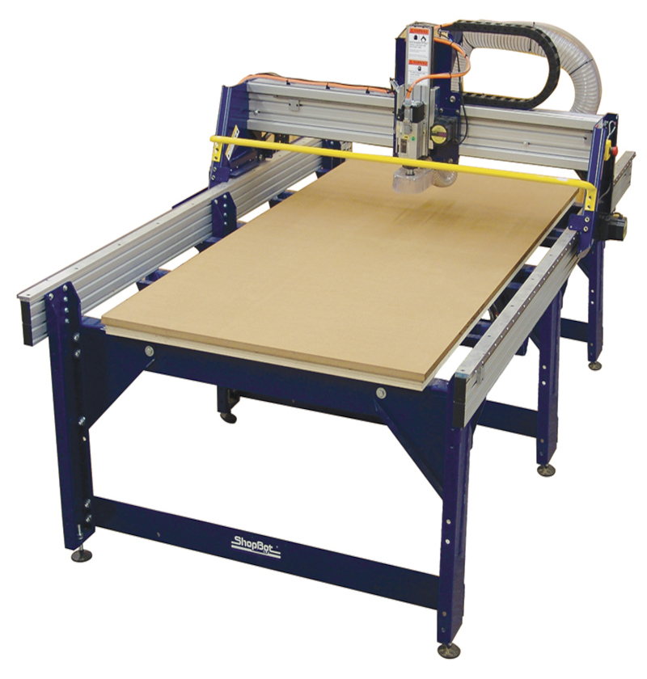
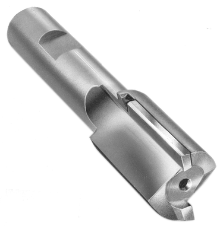
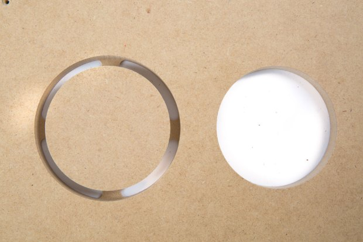
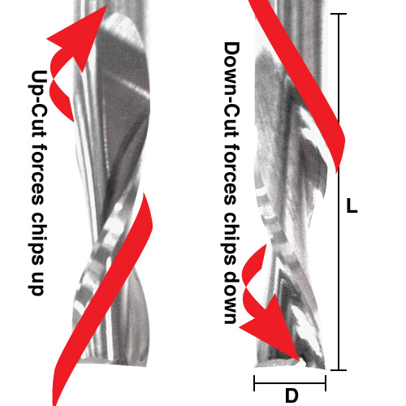
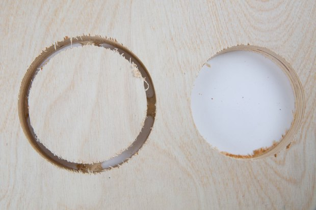
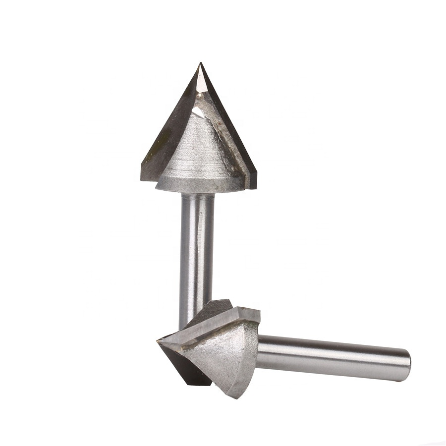
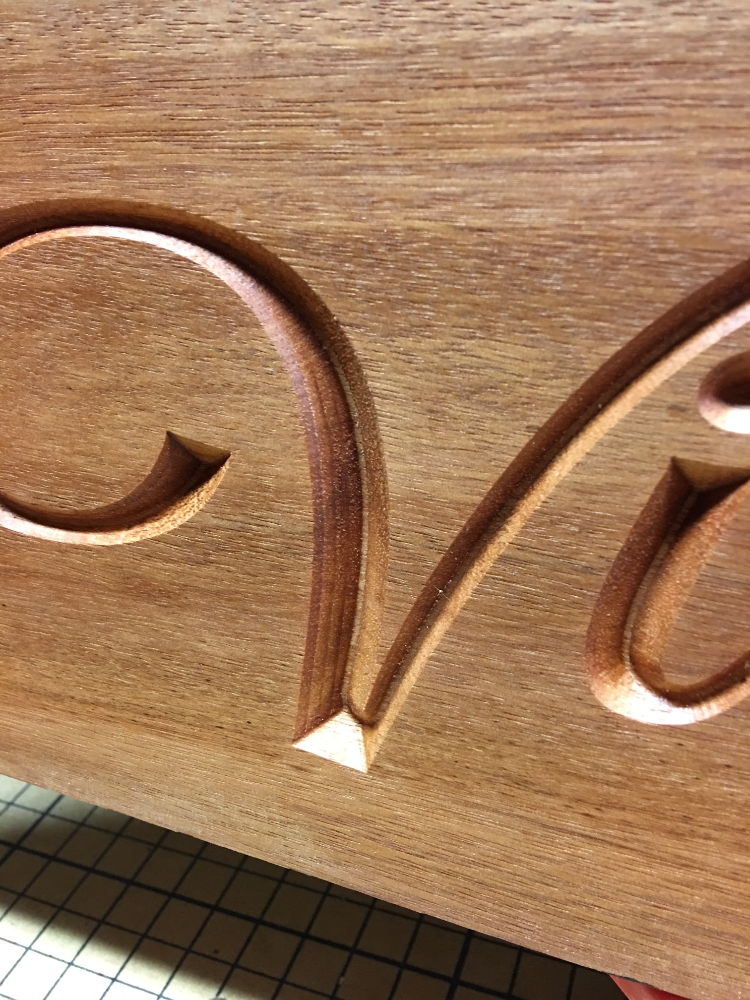
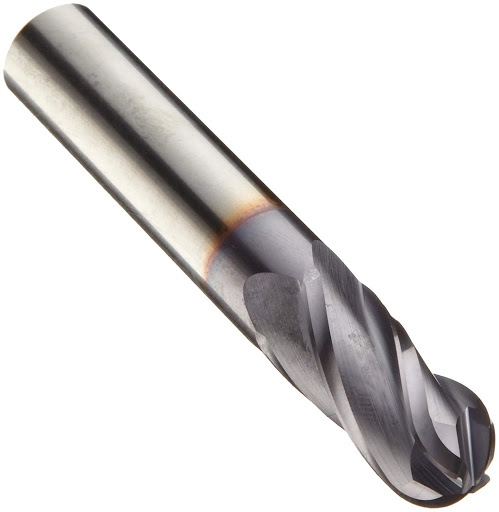
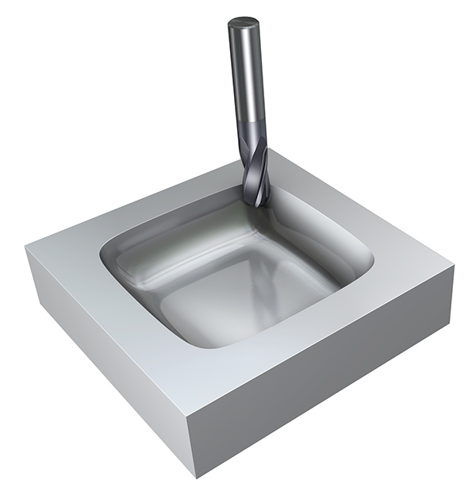

Computer Controlled Machining
By: Debasis Parida on:
This week's assignment is on CNC router, which is basically based on milling and assembling some structures using materials like wood based on a 2D design.We also had to test different parameters of our Shopbot CNC router such as Kerf, Speed etc.
Shopbot CNC router
CNC routers are machines used to cut many types of materials, such as wood, plastic, aluminum, and high-density foam. CNC stands for computer numerical control, which indicates computer software and electronics controlled machines instead of a direct human operator. CNC machines can cut along three directions known as the X, Y, and Z axes. The X-axis is the front to back direction, which is usually the longest. The Y-axis is the left and right direction and the Z-axis is the up and down direction.
Specifications of Shopbot PRSAlpha:
- Bed size: 96 inch * 48 inch
- Step resolution of .0004”.
- Z-zero Touch-Off Plate and XY Proximity Switches.
- Dust Skirt ready to connect to your dust collector.
- XY Move speed: Variable, max. 600”/min
- Z Move speed: Variable, max. 360”/min
Important Components of Shopbot:
Spindle: This is responsible for the cutting.The spindle cuts by rotating its cutting bit at different speeds depending on the material. Softer materials generally require higher revolutions per minute (rpm), while it will cut harder materials at slower speeds.
Cutting Bed:The cutting bed is the flat surface on which the CNC works. It is where we will place the materials that they need to cut and we can then fix material to the cutting bed by using screws,clamps and bolt to ensure the material will not move.
Drive Systems:Drive systems allow the router to move along each of the three axes, and therefore, there is one for each direction. A single drive system consists of a motor, a bearing or guiding system along which the router moves, and a means of moving. Typically, it can move due to a mechanism consisting of a ball or lead screw system or a rack and pinion setup.
Difference between Drill bits and End mills:Basically drill bit moves only up and down which is used to make a hole in a material, but an end mill moves side-to-side to remove unwanted material from a surface to give a useful object.Endmills are available in a wide variety of lengths, diameters, flutes and types, and are chosen according to the material they are cutting and the surface finish required for the project
Types of End mills: Straight Flute End mills:End mills have cutting surfaces are called flutes. The most common end mills have two to four flutes. Generally, fewer flutes evacuate more chips from your material, keeping the bit cool. However, more flutes produce a finer edge finish. There are four basic flute types, each optimized for different materials and edge finish. Solid carbide or carbide tipped are ideal since they don’t dull as easily as HSS (high speed steel) end mills.
 These spiral, flute-shaped end mills either carry chips up and away from the material or down into them. An upcut will keep the bit cool while quickly evacuating materials when cutting plastic or aluminum, however, it will fray the top surface, and may lift your material so be sure to have adequate hold-downs in place.
 A 60° or 90° V-bit is great for what’s called V-carving, in which the tip of a V-shaped bit is used to cut into narrow spaces, and the wide bottom is used to cut into larger spaces. V-bits can also create sharp corners that other end mills cannot because of their radiuses.
 These bits have a rounded tip and are ideal for 3D tool paths. When combined with a “roughing” bit to clear large areas of material, this end mill will result in smooth 3D surfaces, especially with two or more passes.
 For operating shopbot, first thing is to ensure that we have taken all the safety measures like Wearing safety glasses, gloves and headphones to prevent unwanted accidents. Then, let's cut a simple design to test the functionality of the router. I have made a simple circle using "Vcarve Pro" software, which is the official software of Shopbot for creating and cutting parts on a CNC Router. VCarve Pro gives the tools to create complex 2D patterns with profile, pocket, drill and inlay toolpaths.
After completing the design in "Vcarve Pro" i need to add neccessary tools like profile toolpath or drill toolpaths as necessary.Then i saved it as .sbp extension file which is required for Shopbot to complete the task.
Operating Procedures of Shopbot software:- Switch ON the Power supply of CNC Router (Both Circuit Breaker and Power ON Switch). Make sure that the spindle power key is OFF.
- Open the Shopbot application in desktop.
- Now check the Input sensor status. In initial conditions, Z axis sensor and Input 5 should be glowing. To reset the previous data, push the Reset button on the control switch.
- Click on the Z up arrow to take the z axis little upward so that we ll not harm the machine while making our zeroth position of XY axis (Also called as Homing). Now click on the “XY” navigate arrow button to reach the desired position of bed.Then click on "XY" Zero axes check boxes to set the point the "Origin Point".
- To make Z axis as zero, use the Z sensor method. For this method, one person should hold the Z plate aligning to the bed and other should be monitoring on software. Now click on the Z axis zeroth icon in the software which shall automatically move the spindle down to hold the zero position automatically.
- Note: In case of any emergency stop, the machine forgets its previous axes. So to avoid it, we have to note down the X, Y, Z position of the job before setting it to Origin. Using so, we can recover our previous job.